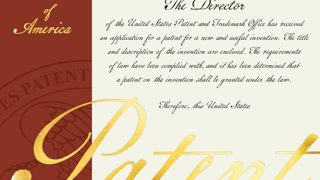

※画像は生成AIで作成したイメージです。このテーマの説明文は準備中です。
関連するページ
- 研究動画：残留応力低減法関係の研究
- 溶接変形残留応力解析(高速・大規模解析)
- 高速スポット溶接プロセス解析(ナゲット径評価、変形残留応力評価)
- 変態塑性を考慮した溶接変形残留応力解析
- ガス・レーザ・プラズマ切断時の変形残留応力解析
関連するお知らせ（題名から自動で集めたもの。5件）
 特許：柴原正和 准教授、生島一樹 准教授、OG沖見優衣さん、D2 加藤拓也 さん、OB河尻義貴さんらが「残留応力低減方法及び残留応力低減装置」に関する特許を取得しました。
特許：柴原正和 准教授、生島一樹 准教授、OG沖見優衣さん、D2 加藤拓也 さん、OB河尻義貴さんらが「残留応力低減方法及び残留応力低減装置」に関する特許を取得しました。 日本製鋼所 橋場大輔 様らと 生島一樹 准教授、河原充 特任研究員、柴原正和 准教授 の共著であった「残留応力に及ぼす変態塑性の影響」に関する溶接学会への投稿論文が採択されました。
日本製鋼所 橋場大輔 様らと 生島一樹 准教授、河原充 特任研究員、柴原正和 准教授 の共著であった「残留応力に及ぼす変態塑性の影響」に関する溶接学会への投稿論文が採択されました。
柴原正和准教授、生島一樹准教授、河原充特任研究員、河尻義貴さん(現JMU)、沖見優衣さん(現川崎重工業)が「修正コンター法の開発」 に関する国際特許(アメリカ合衆国)を取得しました。 2024/02/22 コベルコ溶接テクノ社と柴原研究室の共同研究の成果として、修正コンター法を用いた残留応力計測が事業化されました。
コベルコ溶接テクノ社と柴原研究室の共同研究の成果として、修正コンター法を用いた残留応力計測が事業化されました。 河尻義貴、山田祐介、前川真奈海、沖見優衣らが2件の特許申請(線状加熱の自動化、修正コンター法)を行いました。
河尻義貴、山田祐介、前川真奈海、沖見優衣らが2件の特許申請(線状加熱の自動化、修正コンター法)を行いました。